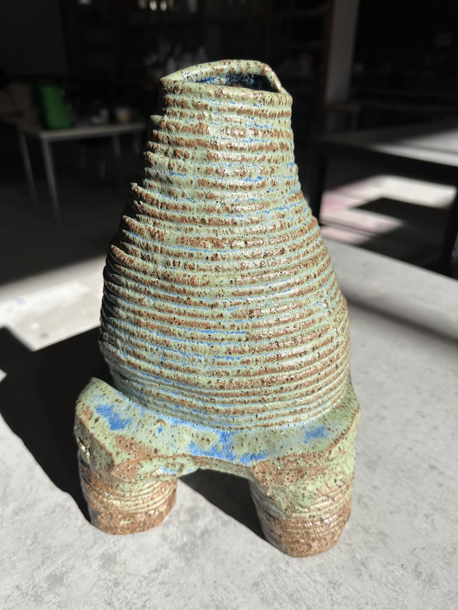
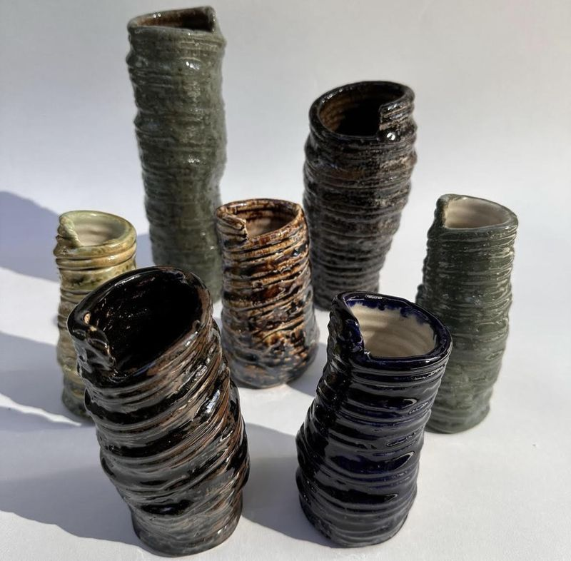
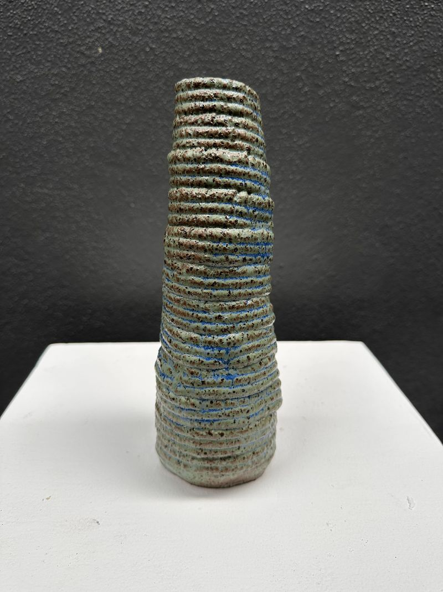
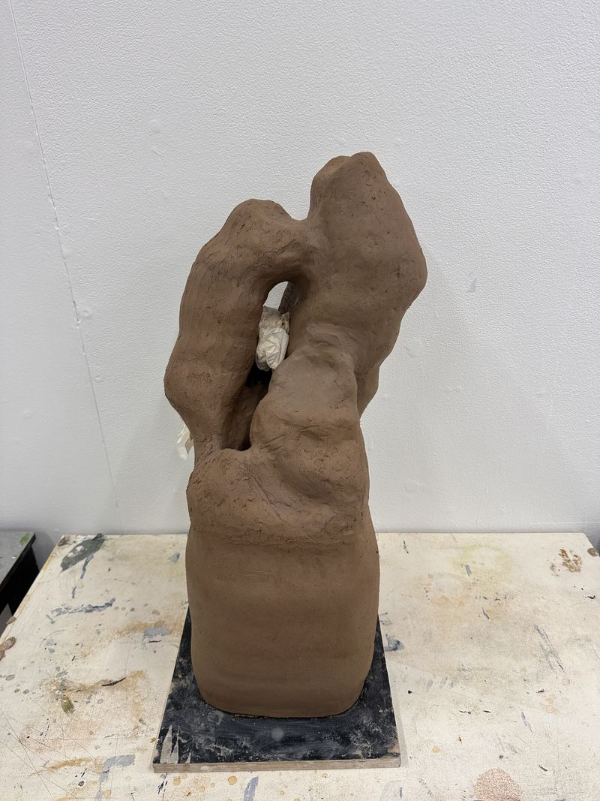
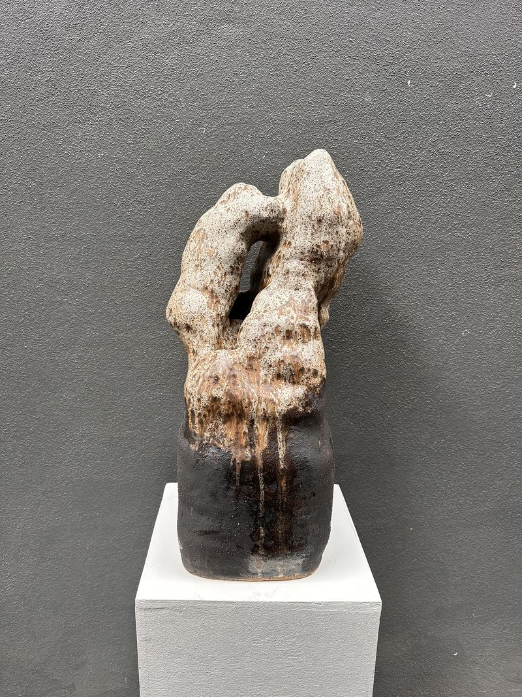
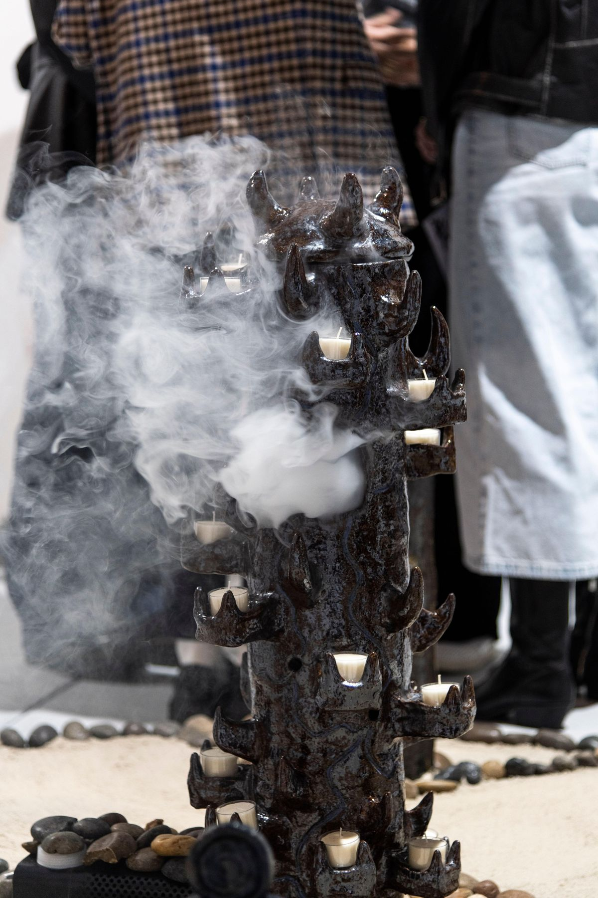
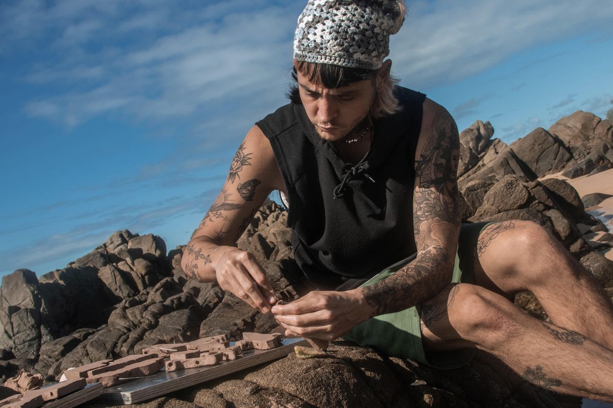
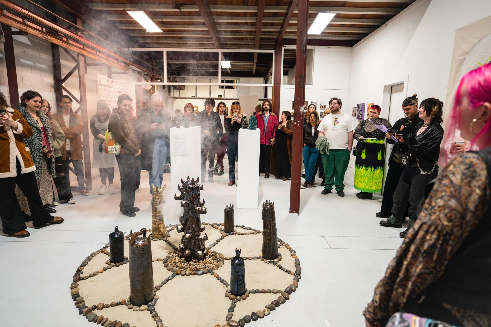
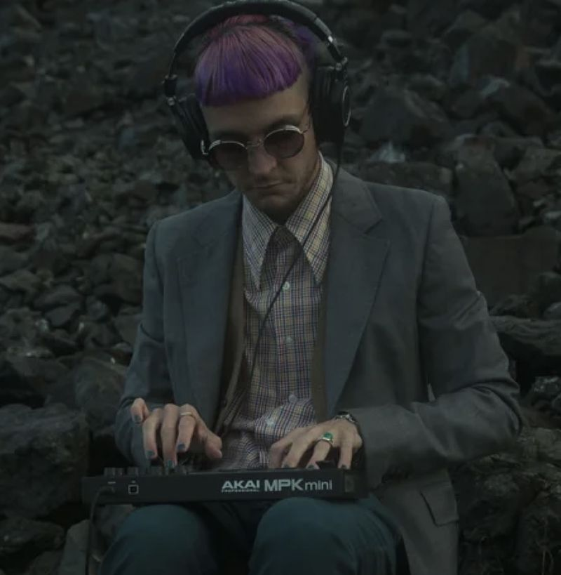

Joshy Bloom

Statement
Working primarily in ceramics and sculpture, a practice guided by intuition and material-led experimentation.
Cultivating from dreams and experiences, the work often investigates themes of fluid identity, exploration of culture, embodiment, and human vulnerability.
Texture and form are treated as extensions of the earth itself.
Selected work
Ceramic & sculpture






At the beach
Process

As I'm sitting here, immersed into this natural space, where my toes feel the sand and this clay in my hands. I am creating with the intention to enjoy the process. My mind wanders, but not too far, because the sound of my surroundings keep bringing me back to the present. And now its a space to indulge in. The pleasures of what feels good and what feels close to me.
I love these moments, because all the noise just softly leaves me, and all the voices just wither away. The elements of nature expand the practice, as I feel the textures of these rocks, the shells, it feels natural to create imprints on the clay. Pressing down. Rubbing the clay on these rocks.
I hop around, feeding my hands into these rock pools, and observing the spaces in between. I smile as I am intrigued with what I find on the beach. The different colours in the shells, the different points and shapes. And same goes for these sticks and stones that I collect and use.
It was a childlike curiosity that led me here. Is this what it feels like to be immersed into something? So many thoughts and so many feelings arise here. But one thing for sure — is that this brings me joy. And I need to keep practicing and playing like this.
Videography, sound and edit by @spotwillows.
The Tower of Dreams
Installation — 2022

Tower of dreams, a link between the conscious and subconscious. Between waking life, our dreams, and a state in between. Fire. Lights. Embers. To guide our way through. To reach home safely.
Curated by @riot_collective.
Sound
Songwriting, guitar, production
Songwriter, guitarist and producer.
